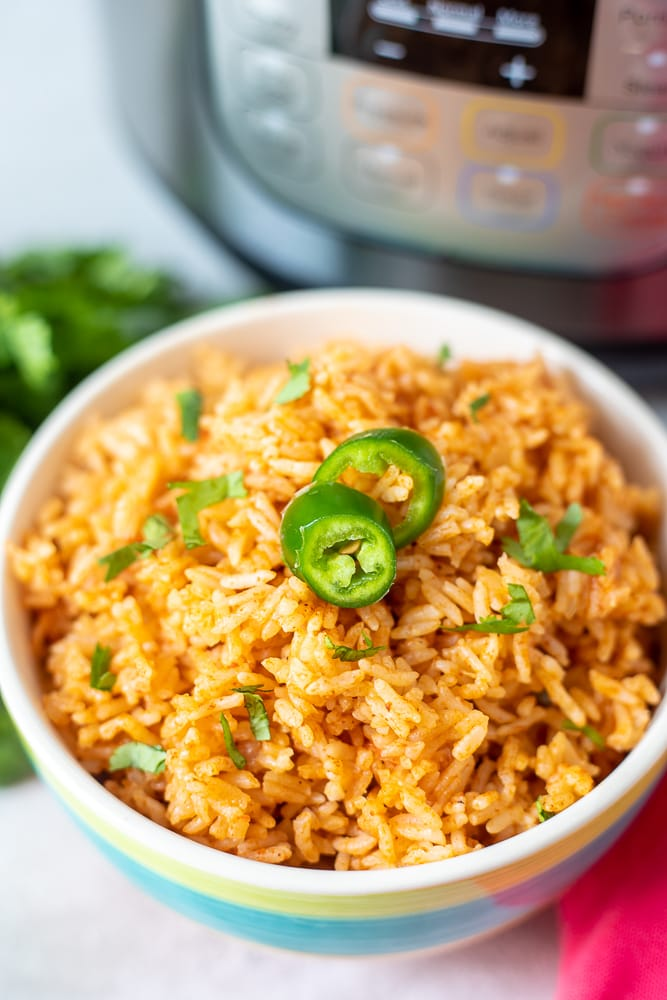

Spanish Rice

Instant Pot Spanish Rice
Spanish rice, also known as Mexican rice, can be a bit difficult
to get right. With this instant pot recipe, it comes out
perfect every time with minimal effort.
Ingredients
- 1 tbsp olive oil
- 1/4 cup small onion diced
- 2 cups chicken broth
- 1 tsp paprika
- 1 tsp salt
- 1 tsp garlic salt
- 1/4 tsp oregano
- 2 cups long-grain rice
- 2/3 cup tomato sauce
Steps
- Turn instant pot to saute
- Add in olive oil and onions. Saute for 2-3 minutes
- Prepare and rinse rise in strainer
- Add in chicken stock once onions are soft. Turn off instant pot
- Add in seasonings and stir
- Add in rice and top with tomato sauce. Do not stir
- Place pressure lid on instant pot
- Cook on high pressure for 3 minutes. Allow pressure to release naturally
- Remove lid after 20-25 minutes and stir rice